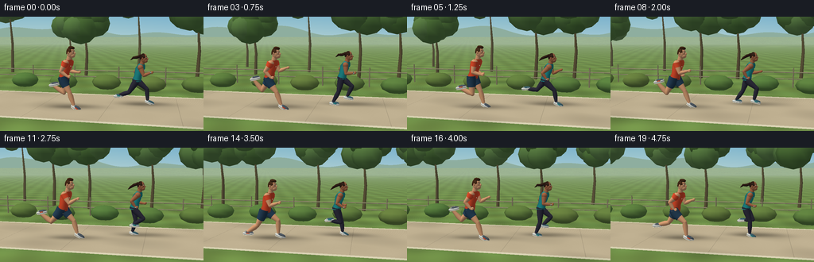
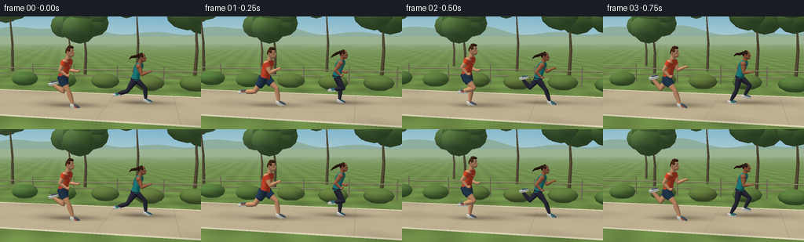

CODING AGENTS AS PIXEL WORLD MODELS
traex/GPT-6.1-Sol · instance_preservation_0033
点击播放 · 原生 RGB 像素
逐轮保存的候选
回放视频、检查图与代码变化。
每份候选均可单独播放。实际图片检查记录在下方工具轨迹中。
候选 01播放与检查图
点击播放 · 原生 RGB 像素


展开代码变化
--- 上一保存版本
+++ 本次保存版本
@@ -0,0 +1,340 @@
+from pathlib import Path
+import json, math
+import numpy as np
+from PIL import Image, ImageFilter
+import artifact_io
+
+ROOT=Path(__file__).resolve().parent
+SPEC=json.loads((ROOT/'task_spec.json').read_text())
+W,H=SPEC['width'],SPEC['height']
+S=3; RW,RH=W*S,H*S
+PI=math.pi
+rng=np.random.default_rng(71)
+
+# A small, self-contained smooth-surface renderer. All geometry is made here.
+def unit(v):
+ v=np.asarray(v,float); return v/(np.linalg.norm(v,axis=-1,keepdims=True)+1e-10)
+
+class Scene:
+ def __init__(self,t,people):
+ self.travel=2.65*t
+ self.eye=np.array([self.travel+1.7,2.12,8.5])
+ self.target=np.array([self.travel,1.0,0.])
+ self.fwd=unit(self.target-self.eye)
+ self.right=unit(np.cross(self.fwd,[0,1,0]))
+ self.up=unit(np.cross(self.right,self.fwd))
+ self.focal=360*S
+ yy,xx=np.mgrid[:RH,:RW]
+ ray=self.fwd[None,None,:]+((xx-RW/2)/self.focal)[...,None]*self.right+((RH/2-yy)/self.focal)[...,None]*self.up
+ k=-self.eye[1]/np.where(abs(ray[:,:,1])>1e-8,ray[:,:,1],1e-8)
+ world=self.eye+ray*k[...,None]
+ X,Z=world[:,:,0],world[:,:,2]
+ sky=np.empty((RH,RW,3),float)
+ blend=np.clip(yy/(RH*.48),0,1)[...,None]
+ sky[:]=np.array([122,178,206])*(1-blend)+np.array([219,230,218])*blend
+ # Sun haze on the left, and distant low forest contours.
+ haze=np.exp(-((xx-RW*.13)/(RW*.62))**2-((yy-RH*.1)/(RH*.65))**2)
+ sky+=haze[...,None]*np.array([18,11,-1])
+ horizon=RH/2+self.focal*self.fwd[1]/math.sqrt(self.fwd[0]**2+self.fwd[2]**2)
+ hills=horizon-8*S-5*S*np.sin(xx/(42*S)+self.travel*.035)-3*S*np.sin(xx/(15*S)+1)
+ hillmask=(yy>hills)&(yy<horizon+7*S)
+ sky[hillmask]=np.array([142,174,159])
+ ground=k>0
+ fine=np.sin(X*73.3+Z*99.1)*np.sin(X*127.8-Z*38.1)
+ coarse=np.sin(X*1.3+Z*3.6)+np.sin(X*4.6-Z*1.6)
+ grass=np.empty_like(sky); grass[:]=[105,136,70]
+ grass+=coarse[...,None]*np.array([4,6,3])+fine[...,None]*2.4
+ lawnstripe=.5+.5*np.sin(Z*3.2)
+ grass+=lawnstripe[...,None]*np.array([9,8,2])
+ path=np.abs(Z)<1.7
+ paving=np.empty_like(sky); paving[:]=[191,176,145]
+ paving+=fine[...,None]*3+coarse[...,None]*1.0
+ # Hairline seams between broad paving slabs emphasize the tracking movement.
+ seam=(np.mod(X+25,2.1)<.014)&(np.abs(Z)<1.7)
+ paving[seam]*=.88
+ color=np.where(path[...,None],paving,grass)
+ border=(np.abs(np.abs(Z)-1.7)<.072)
+ color[border]=[218,211,180]
+ # Soft directional body shadows, fixed in world-space beneath the runners.
+ shade=np.zeros_like(X)
+ for px,pz in people:
+ shade+=.24*np.exp(-((X-px-.4)/.82)**2-((Z-pz+.20)/.29)**2)
+ shade+=.16*np.exp(-((X-px)/.53)**2-((Z-pz)/.20)**2)
+ # Dappled shade from the park trees.
+ dapple=np.maximum(0,np.sin(X*1.25+Z*.7)*np.sin(X*.69-Z*2.2))*.07
+ color*=np.clip(1-shade-dapple,.46,1)[...,None]
+ fog=np.clip((np.maximum(k,0)-15)/95,0,.76)[...,None]
+ color=color*(1-fog)+np.array([172,193,171])*fog
+ self.image=np.where(ground[...,None],color,sky).astype(np.float32)
+ self.depth=np.where(ground,k,np.inf)
+ self.light=unit(np.array([-3.,7.,5.]))
+ def mesh(self,vertices,normals,faces,color,shine=0.0):
+ verts=np.asarray(vertices,float); normals=np.asarray(normals,float)
+ rel=verts-self.eye
+ z=rel@self.fwd
+ px=RW/2+self.focal*(rel@self.right)/np.maximum(z,.1)
+ py=RH/2-self.focal*(rel@self.up)/np.maximum(z,.1)
+ diff=np.maximum(0,normals@self.light)
+ fill=np.maximum(0,normals@unit([3.,2.,-4.]))
+ view=unit(self.eye-verts)
+ halfv=unit(view+self.light)
+ spec=np.maximum(0,np.sum(normals*halfv,axis=1))**28*shine
+ light=(.49+.51*diff+.09*fill)
+ cols=np.asarray(color)[None,:]*light[:,None]
+ cols+=diff[:,None]*np.array([7.,3.,-2.])+spec[:,None]*60
+ # A restrained atmospheric depth falloff.
+ haze=np.clip((z-13)/65,0,.55)
+ cols=cols*(1-haze[:,None])+np.array([170,190,163])*haze[:,None]
+ for a,b,c in faces:
+ if min(z[a],z[b],z[c])<.15: continue
+ xa,xb,xc=px[a],px[b],px[c]; ya,yb,yc=py[a],py[b],py[c]
+ xmin=max(0,int(math.floor(min(xa,xb,xc)))); xmax=min(RW-1,int(math.ceil(max(xa,xb,xc))))
+ ymin=max(0,int(math.floor(min(ya,yb,yc)))); ymax=min(RH-1,int(math.ceil(max(ya,yb,yc))))
+ if xmin>xmax or ymin>ymax: continue
+ den=(yb-yc)*(xa-xc)+(xc-xb)*(ya-yc)
+ if abs(den)<1e-8: continue
+ yy,xx=np.mgrid[ymin:ymax+1,xmin:xmax+1]; xx=xx+.5; yy=yy+.5
+ u=((yb-yc)*(xx-xc)+(xc-xb)*(yy-yc))/den
+ v=((yc-ya)*(xx-xc)+(xa-xc)*(yy-yc))/den
+ w=1-u-v
+ inv=u/z[a]+v/z[b]+w/z[c]
+ depth=1/np.maximum(inv,1e-10)
+ patch=self.depth[ymin:ymax+1,xmin:xmax+1]
+ mask=(u>=-1e-5)&(v>=-1e-5)&(w>=-1e-5)&(depth<patch)
+ if not np.any(mask): continue
+ rgb=(u[...,None]*cols[a]/z[a]+v[...,None]*cols[b]/z[b]+w[...,None]*cols[c]/z[c])*depth[...,None]
+ self.image[ymin:ymax+1,xmin:xmax+1][mask]=rgb[mask]
+ patch[mask]=depth[mask]
+ def ellipsoid(self,center,radii,color,rotation=None,segments=16,rings=10,shine=.0):
+ theta=np.linspace(0,PI,rings+1); phi=np.arange(segments)*2*PI/segments
+ tt,pp=np.meshgrid(theta,phi,indexing='ij')
+ xyz=np.stack([np.sin(tt)*np.cos(pp),np.cos(tt),np.sin(tt)*np.sin(pp)],-1).reshape(-1,3)
+ normals=unit(xyz/np.array(radii))
+ pts=xyz*np.array(radii)
+ if rotation is not None: pts=pts@rotation.T; normals=normals@rotation.T
+ pts+=center
+ faces=[]
+ for j in range(rings):
+ for i in range(segments):
+ a=j*segments+i; b=j*segments+(i+1)%segments; c=(j+1)*segments+i; d=(j+1)*segments+(i+1)%segments
+ if j>0: faces.append((a,b,c))
+ if j<rings-1: faces.append((b,d,c))
+ self.mesh(pts,normals,faces,color,shine)
+ def tube(self,points,radii,color,segments=12,shine=0):
+ points=np.array(points,float); radii=np.asarray(radii,float)
+ if radii.ndim==1: radii=np.stack([radii,radii],1)
+ verts=[]; normals=[]
+ for i,p in enumerate(points):
+ tangent=unit(points[min(i+1,len(points)-1)]-points[max(0,i-1)])
+ ref=[0,0,1] if abs(tangent[2])<.9 else [0,1,0]
+ u=unit(np.cross(tangent,ref)); v=unit(np.cross(tangent,u))
+ for j in range(segments):
+ co=math.cos(j*2*PI/segments); si=math.sin(j*2*PI/segments)
+ verts.append(p+u*co*radii[i,0]+v*si*radii[i,1])
+ normals.append(unit(u*co/radii[i,0]+v*si/radii[i,1]))
+ faces=[]
+ for i in range(len(points)-1):
+ for j in range(segments):
+ a=i*segments+j; b=i*segments+(j+1)%segments; c=a+segments; d=b+segments
+ faces.extend([(a,b,c),(b,d,c)])
+ # Closed ends.
+ for end,normal in [(0,unit(points[0]-points[1])),(len(points)-1,unit(points[-1]-points[-2]))]:
+ idx=len(verts); verts.append(points[end]); normals.append(normal)
+ for j in range(segments): faces.append((idx,end*segments+j,end*segments+(j+1)%segments))
+ self.mesh(verts,normals,faces,color,shine)
+
+
+def rot_z(a):
+ return np.array([[math.cos(a),-math.sin(a),0],[math.sin(a),math.cos(a),0],[0,0,1.]])
+
+def catmull(values,u):
+ n=len(values); x=(u%1)*n; i=int(x); f=x-i
+ p0,p1,p2,p3=[values[j%n] for j in [i-1,i,i+1,i+2]]
+ return .5*((2*p1)+(-p0+p2)*f+(2*p0-5*p1+4*p2-p3)*f*f+(-p0+3*p1-3*p2+p3)*f*f*f)
+
+THIGH=np.array([.50,.20,-.40,-.75,-.10,.75,.90,.70])
+KNEE=np.array([.18,.40,.35,1.60,2.,1.9,1.,.40])
+
+
+def person(scene,x,z,t,female=False,offset=0):
+ scale=.94 if female else 1.03
+ phase=t*1.22+offset
+ skin=np.array([167,107,76]) if female else np.array([221,163,122])
+ shirt=np.array([30,145,150]) if female else np.array([229,79,48])
+ pants=np.array([43,45,64]) if female else np.array([36,66,93])
+ hair=np.array([43,28,24]) if female else np.array([64,40,26])
+ angles=[]; rawfeet=[]
+ for side in [-1,1]:
+ u=phase+(0 if side==1 else .5)
+ th=catmull(THIGH,u); kn=max(.08,catmull(KNEE,u))
+ angles.append((side,th,kn,u))
+ rawfeet.append(-.445*math.cos(th)-.435*math.cos(th-kn))
+ # Ground contact occupies the beginning of each stance; other phases have a flight interval.
+ contact=min(phase%1,(phase+.5)%1)
+ flight=.032*math.sin(PI*np.clip((contact-.17)/.33,0,1))
+ hipy=-min(rawfeet)+.066+flight
+ hip=np.array([x,hipy*scale,z])
+ def P(a): return hip+np.array(a)*scale
+ def E(c,r,col,**kwargs): scene.ellipsoid(P(c),np.array(r)*scale,col,**kwargs)
+ def T(points,radii,col,**kwargs): scene.tube([P(v) for v in points],np.array(radii)*scale,col,**kwargs)
+ # Leg muscles and clothing share the same anatomical joint chain.
+ feet=[]
+ for side,th,kn,u in angles:
+ joint=np.array([0.,-.015,side*.125])
+ knee=joint+np.array([.445*math.sin(th),-.445*math.cos(th),side*.007])
+ ankle=knee+np.array([.435*math.sin(th-kn),-.435*math.cos(th-kn),0.])
+ thighpoints=[joint,joint*.82+knee*.18,joint*.55+knee*.45,joint*.2+knee*.8,knee]
+ if female:
+ T(thighpoints,[.108,.112,.100,.075,.066],pants)
+ T([knee,knee*.68+ankle*.32,knee*.34+ankle*.66,ankle],[.066,.074,.058,.037],pants)
+ else:
+ T(thighpoints,[.113,.121,.101,.077,.062],skin,shine=.09)
+ T([knee,knee*.75+ankle*.25,knee*.50+ankle*.50,ankle],[.061,.078,.067,.035],skin,shine=.08)
+ hem=joint*.46+knee*.54
+ T([joint+np.array([0,.065,0]),joint*.78+knee*.22,hem],[.133,.137,.117],pants)
+ # Fine pale side piping on shorts.
+ if side==1:
+ pts=[joint+np.array([-.013,.038,.124]),hem+np.array([0,0,.10])]
+ T(pts,[.008,.008],[137,162,177],segments=6)
+ E(knee,[.062,.067,.062],pants if female else skin)
+ # Ankle sock and a sculpted trainer: white midsole, colored upper, heel, toe.
+ T([ankle+np.array([0,.058,0]),ankle],[.043,.045],[225,226,218])
+ footangle=np.clip(-.14+.40*math.sin(2*PI*(u-.20)),-.48,.37)
+ rotation=rot_z(footangle)
+ center=ankle+rotation@np.array([.067,-.004,0])
+ E(center,[.175,.061,.066],[220,226,222],rotation=rotation,shine=.12)
+ E(center+rotation@np.array([.014,.026,0]),[.145,.049,.060],[56,99,116] if female else [76,90,105],rotation=rotation)
+ E(center+rotation@np.array([.005,-.043,0]),[.171,.016,.068],[242,237,216],rotation=rotation)
+ # Laces and the outside colored shoe mark.
+ for j in range(3):
+ lacecenter=center+rotation@np.array([.018+j*.025,.062,0])
+ E(lacecenter,[.007,.005,.045],[221,225,218],rotation=rotation,segments=8,rings=4)
+ E(center+rotation@np.array([.015,.012,side*.058]),[.061,.019,.009],shirt,rotation=rotation,segments=10,rings=5)
+ # Continuous tailored torso, narrowing at the waist with a forward runner's lean.
+ rings=[(-.03,.0,.145,.18),(.07,.02,.145,.182),(.17,.047,.124,.173),(.28,.076,.142,.204),(.41,.114,.161,.236),(.49,.142,.135,.214),(.54,.158,.101,.152)]
+ verts=[]; normals=[]; seg=20
+ for y,cx,rx,rz in rings:
+ for j in range(seg):
+ a=j*2*PI/seg
+ verts.append(P([cx+rx*math.cos(a),y,rz*math.sin(a)]))
+ normals.append(unit([math.cos(a)/rx,-.13,math.sin(a)/rz]))
+ faces=[]
+ for i in range(len(rings)-1):
+ for j in range(seg):
+ a=i*seg+j;b=i*seg+(j+1)%seg;c=a+seg;d=b+seg;faces.extend([(a,b,c),(b,d,c)])
+ scene.mesh(verts,normals,faces,shirt)
+ E([.005,.014,0],[.149,.097,.186],pants)
+ # Hem and small reflective chest detail, no letters or overlays.
+ T([[.026,.06,-.163],[.026,.06,.163]],[.01,.01],shirt*.76,segments=8)
+ E([.249,.36,.09],[.008,.016,.035],[231,223,193],segments=8,rings=6)
+ # Arms are counterphased to the legs, elbows flexed naturally.
+ for side,th,kn,u in angles:
+ shoulder=np.array([.135,.457,side*.213])
+ a=-.85*th-.10
+ elbow=shoulder+np.array([.282*math.sin(a),-.282*math.cos(a),side*.025])
+ af=a+1.48+.13*math.sin(2*PI*u)
+ wrist=elbow+np.array([.248*math.sin(af),-.248*math.cos(af),-.024*side])
+ E(shoulder,[.094,.093,.096],skin)
+ T([shoulder,shoulder*.65+elbow*.35,shoulder*.26+elbow*.74,elbow],[.084,.081,.060,.046],skin,shine=.06)
+ E(elbow,[.047,.046,.046],skin)
+ T([elbow,elbow*.66+wrist*.34,wrist],[.047,.056,.031],skin,shine=.06)
+ if not female:
+ sleeve=shoulder*.60+elbow*.40
+ T([shoulder+np.array([0,.026,0]),shoulder*.8+elbow*.2,sleeve],[.108,.102,.087],shirt)
+ else:
+ E(shoulder+np.array([-.012,.036,-side*.045]),[.087,.077,.058],shirt)
+ hand=wrist+np.array([.037,.008,0])
+ E(hand,[.057,.041,.036],skin,rotation=rot_z(.48),segments=12,rings=8)
+ E(hand+np.array([.008,-.019,side*.028]),[.030,.019,.022],skin,segments=10,rings=6)
+ if female and side==1:
+ T([wrist+np.array([-.012,-.007,0]),wrist+np.array([.010,.006,0])],[.036,.036],[35,42,45],segments=10)
+ E(wrist+np.array([0,0,.037]),[.022,.02,.006],[159,186,188],segments=8,rings=5)
+ # Neck, head, explicit features, hair, and ears retain identity over the whole shot.
+ T([[.158,.50,0],[.191,.661,0]],[.079,.069],skin)
+ hc=np.array([.224,.735,0])
+ E(hc,[.113,.160,.106],skin,shine=.08,segments=24,rings=16)
+ E(hc+np.array([.052,-.076,0]),[.078,.068,.089],skin,segments=16,rings=10)
+ E(hc+np.array([.108,-.014,0]),[.041,.036,.025],skin,segments=12,rings=8)
+ E(hc+np.array([.131,-.025,0]),[.016,.015,.023],skin*.96,segments=10,rings=6)
+ for side in [-1,1]:
+ E(hc+np.array([-.034,-.002,side*.104]),[.029,.041,.014],skin*.97,segments=12,rings=8)
+ E(hc+np.array([-.025,-.004,side*.114]),[.013,.025,.005],skin*.77,segments=8,rings=6)
+ E(hc+np.array([.079,.036,side*.069]),[.025,.012,.011],[231,221,205],segments=10,rings=6)
+ E(hc+np.array([.095,.036,side*.072]),[.010,.008,.008],[48,39,31],segments=8,rings=6)
+ T([hc+np.array([.066,.058,side*.074]),hc+np.array([.099,.057,side*.063])],[.006,.005],hair,segments=6)
+ E(hc+np.array([.112,-.067,0]),[.012,.008,.036],[145,82,66],segments=10,rings=6)
+ # Sculpted hair cap follows the upper and rear surface of the head.
+ verts=[]; normals=[]; nphi=28; nr=10
+ for i in range(nr+1):
+ for j in range(nphi):
+ phi=j*2*PI/nphi
+ # Front hairline stays above the brows, back wraps down to the nape.
+ maximum=1.23+.56*(1-math.cos(phi))/2
+ theta=.025+i/nr*maximum
+ local=np.array([.118*math.sin(theta)*math.cos(phi),.163*math.cos(theta),.112*math.sin(theta)*math.sin(phi)])
+ local[0]-=.013
+ verts.append(P(hc+local)); normals.append(unit(local/np.array([.118,.163,.112])**2))
+ faces=[]
+ for i in range(nr):
+ for j in range(nphi):
+ a=i*nphi+j;b=i*nphi+(j+1)%nphi;c=a+nphi;d=b+nphi;faces.extend([(a,b,c),(b,d,c)])
+ scene.mesh(verts,normals,faces,hair,.15)
+ if female:
+ sway=.037*math.sin(2*PI*phase+.7)
+ E(hc+np.array([-.11,.069,0]),[.060,.060,.062],hair)
+ T([hc+np.array([-.12,.071,0]),hc+np.array([-.23,.035,.01]),hc+np.array([-.34,.002+sway,.02]),hc+np.array([-.43,-.077+sway,.028])],[.043,.046,.036,.007],hair,segments=12,shine=.10)
+ E(hc+np.array([-.15,.05,0]),[.012,.042,.044],[48,133,139],segments=10,rings=6)
+ else:
+ # Short swept front tuft gives the male runner a stable silhouette.
+ E(hc+np.array([.026,.145,0]),[.093,.047,.098],hair,rotation=rot_z(-.16),segments=16,rings=8)
+
+# Deterministic tree positions and foliage masses, not framewise random shapes.
+trees=[]
+for i in range(24):
+ x=-12+i*2.55+rng.uniform(-.5,.5); z=-5.8-rng.uniform(0,5)
+ tall=rng.uniform(2.6,4.2)
+ masses=[]
+ for j in range(7):
+ masses.append((rng.uniform(-.65,.65),rng.uniform(-.4,.6),rng.uniform(-.5,.5),rng.uniform(.57,.95),rng.uniform(-10,10)))
+ trees.append((x,z,tall,masses))
+
+
+def environment(scene):
+ # Thin trunks and rounded but faceted botanical crowns produce a lush park backdrop.
+ for x,z,h,masses in trees:
+ if abs(x-scene.travel)>15: continue
+ scene.tube([[x,0,z],[x+.06,h*.42,z],[x-.05,h*.83,z]],[.095,.074,.035],[100,91,65],segments=7)
+ for j,(dx,dy,dz,r,shade) in enumerate(masses):
+ scene.ellipsoid([x+dx,h+dy,z+dz],[r,r*.91,r*.85],np.array([82,123,66])+shade,segments=10,rings=6)
+ # Sparse low shrubs, far enough behind the path to never obscure the runners.
+ for i in range(26):
+ x=-13+i*1.8; z=-2.9-.3*math.sin(i*3.1)
+ if abs(x-scene.travel)>12: continue
+ scene.ellipsoid([x,.27,z],[.61,.32,.46],[98+8*math.sin(i),135,70],segments=10,rings=6)
+ # Park fence runs behind them; its parallax clarifies actual forward running.
+ for x in np.arange(-16,39,2.0):
+ if abs(x-scene.travel)>14: continue
+ scene.tube([[x,0,-3.8],[x,.83,-3.8]],[.029,.026],[148,144,115],segments=6)
+ scene.tube([[-18,.64,-3.8],[41,.64,-3.8]],[.022,.022],[157,152,124],segments=6)
+ scene.tube([[-18,.36,-3.8],[41,.36,-3.8]],[.02,.02],[157,152,124],segments=6)
+
+
+def generate():
+ result=[]
+ for i in range(SPEC['frames']):
+ t=i/SPEC['fps']; travel=2.65*t
+ nearx=travel-1.09+.06*math.sin(t*1.4)
+ farx=travel+1.00+.08*math.sin(t*1.25+.4)
+ scene=Scene(t,[(nearx,.38),(farx,-.40)])
+ environment(scene)
+ person(scene,farx,-.40,t,True,.29)
+ person(scene,nearx,.38,t,False,0)
+ im=Image.fromarray(np.uint8(np.clip(scene.image,0,255)))
+ im=im.resize((W,H),Image.Resampling.LANCZOS)
+ result.append(np.array(im))
+ print(f'Generated frame {i+1}/{SPEC["frames"]}',flush=True)
+ frames=np.stack(result)
+ artifact_io.save(frames,ROOT)
+ print('Saved RGB video artifacts.',flush=True)
+
+if __name__=='__main__': generate()
可观测工具轨迹
实际执行的命令与返回图片。
命令 1exit 0
/bin/bash -lc "ls -la && cat prompt.txt && printf '\\n---RULES---\\n' && cat GENERATION_RULES.md && printf '\\n---SPEC---\\n' && cat task_spec.json"
命令 2exit 0
/bin/bash -lc "cat artifact_io.py && python - <<'PY' import importlib.util for x in ['numpy','PIL','scipy']: print(x, bool(importlib.util.find_spec(x))) PY"
命令 3exit 0
/bin/bash -lc "cat > generate.py <<'PY'
from pathlib import Path
import json, math
import numpy as np
from PIL import Image, ImageFilter
import artifact_io
ROOT=Path(__file__).resolve().parent
SPEC=json.loads((ROOT/'task_spec.json').read_text())
W,H=SPEC['width'],SPEC['height']
S=3; RW,RH=W*S,H*S
PI=math.pi
rng=np.random.default_rng(71)
# A small, self-contained smooth-surface renderer. All geometry is made here.
def unit(v):
v=np.asarray(v,float); return v/(np.linalg.norm(v,axis=-1,keepdims=True)+1e-10)
class Scene:
def __init__(self,t,people):
self.travel=2.65*t
self.eye=np.array([self.travel+1.7,2.12,8.5])
self.target=np.array([self.travel,1.0,0.])
self.fwd=unit(self.target-self.eye)
self.right=unit(np.cross(self.fwd,[0,1,0]))
self.up=unit(np.cross(self.right,self.fwd))
self.focal=360*S
yy,xx=np.mgrid[:RH,:RW]
ray=self.fwd[None,None,:]+((xx-RW/2)/self.focal)[...,None]*self.right+((RH/2-yy)/self.focal)[...,None]*self.up
k=-self.eye[1]/np.where(abs(ray[:,:,1])>1e-8,ray[:,:,1],1e-8)
world=self.eye+ray*k[...,None]
X,Z=world[:,:,0],world[:,:,2]
sky=np.empty((RH,RW,3),float)
blend=np.clip(yy/(RH*.48),0,1)[...,None]
sky[:]=np.array([122,178,206])*(1-blend)+np.array([219,230,218])*blend
# Sun haze on the left, and distant low forest contours.
haze=np.exp(-((xx-RW*.13)/(RW*.62))**2-((yy-RH*.1)/(RH*.65))**2)
sky+=haze[...,None]*np.array([18,11,-1])
horizon=RH/2+self.focal*self.fwd[1]/math.sqrt(self.fwd[0]**2+self.fwd[2]**2)
hills=horizon-8*S-5*S*np.sin(xx/(42*S)+self.travel*.035)-3*S*np.sin(xx/(15*S)+1)
hillmask=(yy>hills)&(yy<horizon+7*S)
sky[hillmask]=np.array([142,174,159])
ground=k>0
fine=np.sin(X*73.3+Z*99.1)*np.sin(X*127.8-Z*38.1)
coarse=np.sin(X*1.3+Z*3.6)+np.sin(X*4.6-Z*1.6)
grass=np.empty_like(sky); grass[:]=[105,136,70]
grass+=coarse[...,None]*np.array([4,6,3])+fine[...,None]*2.4
lawnstripe=.5+.5*np.sin(Z*3.2)
grass+=lawnstripe[...,None]*np.array([9,8,2])
path=np.abs(Z)<1.7
paving=np.empty_like(sky); paving[:]=[191,176,145]
paving+=fine[...,None]*3+coarse[...,None]*1.0
# Hairline seams between broad paving slabs emphasize the tracking movement.
seam=(np.mod(X+25,2.1)<.014)&(np.abs(Z)<1.7)
paving[seam]*=.88
color=np.where(path[...,None],paving,grass)
border=(np.abs(np.abs(Z)-1.7)<.072)
color[border]=[218,211,180]
# Soft directional body shadows, fixed in world-space beneath the runners.
shade=np.zeros_like(X)
for px,pz in people:
shade+=.24*np.exp(-((X-px-.4)/.82)**2-((Z-pz+.20)/.29)**2)
shade+=.16*np.exp(-((X-px)/.53)**2-((Z-pz)/.20)**2)
# Dappled shade from the park trees.
dapple=np.maximum(0,np.sin(X*1.25+Z*.7)*np.sin(X*.69-Z*2.2))*.07
color*=np.clip(1-shade-dapple,.46,1)[...,None]
fog=np.clip((np.maximum(k,0)-15)/95,0,.76)[...,None]
color=color*(1-fog)+np.array([172,193,171])*fog
self.image=np.where(ground[...,None],color,sky).astype(np.float32)
self.depth=np.where(ground,k,np.inf)
self.light=unit(np.array([-3.,7.,5.]))
def mesh(self,vertices,normals,faces,color,shine=0.0):
verts=np.asarray(vertices,float); normals=np.asarray(normals,float)
rel=verts-self.eye
z=rel@self.fwd
px=RW/2+self.focal*(rel@self.right)/np.maximum(z,.1)
py=RH/2-self.focal*(rel@self.up)/np.maximum(z,.1)
diff=np.maximum(0,normals@self.light)
fill=np.maximum(0,normals@unit([3.,2.,-4.]))
view=unit(self.eye-verts)
halfv=unit(view+self.light)
spec=np.maximum(0,np.sum(normals*halfv,axis=1))**28*shine
light=(.49+.51*diff+.09*fill)
cols=np.asarray(color)[None,:]*light[:,None]
cols+=diff[:,None]*np.array([7.,3.,-2.])+spec[:,None]*60
# A restrained atmospheric depth falloff.
haze=np.clip((z-13)/65,0,.55)
cols=cols*(1-haze[:,None])+np.array([170,190,163])*haze[:,None]
for a,b,c in faces:
if min(z[a],z[b],z[c])<.15: continue
xa,xb,xc=px[a],px[b],px[c]; ya,yb,yc=py[a],py[b],py[c]
xmin=max(0,int(math.floor(min(xa,xb,xc)))); xmax=min(RW-1,int(math.ceil(max(xa,xb,xc))))
ymin=max(0,int(math.floor(min(ya,yb,yc)))); ymax=min(RH-1,int(math.ceil(max(ya,yb,yc))))
if xmin>xmax or ymin>ymax: continue
den=(yb-yc)*(xa-xc)+(xc-xb)*(ya-yc)
if abs(den)<1e-8: continue
yy,xx=np.mgrid[ymin:ymax+1,xmin:xmax+1]; xx=xx+.5; yy=yy+.5
u=((yb-yc)*(xx-xc)+(xc-xb)*(yy-yc))/den
v=((yc-ya)*(xx-xc)+(xa-xc)*(yy-yc))/den
w=1-u-v
inv=u/z[a]+v/z[b]+w/z[c]
depth=1/np.maximum(inv,1e-10)
patch=self.depth[ymin:ymax+1,xmin:xmax+1]
mask=(u>=-1e-5)&(v>=-1e-5)&(w>=-1e-5)&(depth<patch)
if not np.any(mask): continue
rgb=(u[...,None]*cols[a]/z[a]+v[...,None]*cols[b]/z[b]+w[...,None]*cols[c]/z[c])*depth[...,None]
self.image[ymin:ymax+1,xmin:xmax+1][mask]=rgb[mask]
patch[mask]=depth[mask]
def ellipsoid(self,center,radii,color,rotation=None,segments=16,rings=10,shine=.0):
theta=np.linspace(0,PI,rings+1); phi=np.arange(segments)*2*PI/segments
tt,pp=np.meshgrid(theta,phi,indexing='ij')
xyz=np.stack([np.sin(tt)*np.cos(pp),np.cos(tt),np.sin(tt)*np.sin(pp)],-1).reshape(-1,3)
normals=unit(xyz/np.array(radii))
pts=xyz*np.array(radii)
if rotation is not None: pts=pts@rotation.T; normals=normals@rotation.T
pts+=center
faces=[]
for j in range(rings):
for i in range(segments):
a=j*segments+i; b=j*segments+(i+1)%segments; c=(j+1)*segments+i; d=(j+1)*segments+(i+1)%segments
if j>0: faces.append((a,b,c))
if j<rings-1: faces.append((b,d,c))
self.mesh(pts,normals,faces,color,shine)
def tube(self,points,radii,color,segments=12,shine=0):
points=np.array(points,float); radii=np.asarray(radii,float)
if radii.ndim==1: radii=np.stack([radii,radii],1)
verts=[]; normals=[]
for i,p in enumerate(points):
tangent=unit(points[min(i+1,len(points)-1)]-points[max(0,i-1)])
ref=[0,0,1] if abs(tangent[2])<.9 else [0,1,0]
u=unit(np.cross(tangent,ref)); v=unit(np.cross(tangent,u))
for j in range(segments):
co=math.cos(j*2*PI/segments); si=math.sin(j*2*PI/segments)
verts.append(p+u*co*radii[i,0]+v*si*radii[i,1])
normals.append(unit(u*co/radii[i,0]+v*si/radii[i,1]))
faces=[]
for i in range(len(points)-1):
for j in range(segments):
a=i*segments+j; b=i*segments+(j+1)%segments; c=a+segments; d=b+segments
faces.extend([(a,b,c),(b,d,c)])
# Closed ends.
for end,normal in [(0,unit(points[0]-points[1])),(len(points)-1,unit(points[-1]-points[-2]))]:
idx=len(verts); verts.append(points[end]); normals.append(normal)
for j in range(segments): faces.append((idx,end*segments+j,end*segments+(j+1)%segments))
self.mesh(verts,normals,faces,color,shine)
def rot_z(a):
return np.array([[math.cos(a),-math.sin(a),0],[math.sin(a),math.cos(a),0],[0,0,1.]])
def catmull(values,u):
n=len(values); x=(u%1)*n; i=int(x); f=x-i
p0,p1,p2,p3=[values[j%n] for j in [i-1,i,i+1,i+2]]
return .5*((2*p1)+(-p0+p2)*f+(2*p0-5*p1+4*p2-p3)*f*f+(-p0+3*p1-3*p2+p3)*f*f*f)
THIGH=np.array([.50,.20,-.40,-.75,-.10,.75,.90,.70])
KNEE=np.array([.18,.40,.35,1.60,2.,1.9,1.,.40])
def person(scene,x,z,t,female=False,offset=0):
scale=.94 if female else 1.03
phase=t*1.22+offset
skin=np.array([167,107,76]) if female else np.array([221,163,122])
shirt=np.array([30,145,150]) if female else np.array([229,79,48])
pants=np.array([43,45,64]) if female else np.array([36,66,93])
hair=np.array([43,28,24]) if female else np.array([64,40,26])
angles=[]; rawfeet=[]
for side in [-1,1]:
u=phase+(0 if side==1 else .5)
th=catmull(THIGH,u); kn=max(.08,catmull(KNEE,u))
angles.append((side,th,kn,u))
rawfeet.append(-.445*math.cos(th)-.435*math.cos(th-kn))
# Ground contact occupies the beginning of each stance; other phases have a flight interval.
contact=min(phase%1,(phase+.5)%1)
flight=.032*math.sin(PI*np.clip((contact-.17)/.33,0,1))
hipy=-min(rawfeet)+.066+flight
hip=np.array([x,hipy*scale,z])
def P(a): return hip+np.array(a)*scale
def E(c,r,col,**kwargs): scene.ellipsoid(P(c),np.array(r)*scale,col,**kwargs)
def T(points,radii,col,**kwargs): scene.tube([P(v) for v in points],np.array(radii)*scale,col,**kwargs)
# Leg muscles and clothing share the same anatomical joint chain.
feet=[]
for side,th,kn,u in angles:
joint=np.array([0.,-.015,side*.125])
knee=joint+np.array([.445*math.sin(th),-.445*math.cos(th),side*.007])
ankle=knee+np.array([.435*math.sin(th-kn),-.435*math.cos(th-kn),0.])
thighpoints=[joint,joint*.82+knee*.18,joint*.55+knee*.45,joint*.2+knee*.8,knee]
if female:
T(thighpoints,[.108,.112,.100,.075,.066],pants)
T([knee,knee*.68+ankle*.32,knee*.34+ankle*.66,ankle],[.066,.074,.058,.037],pants)
else:
T(thighpoints,[.113,.121,.101,.077,.062],skin,shine=.09)
T([knee,knee*.75+ankle*.25,knee*.50+ankle*.50,ankle],[.061,.078,.067,.035],skin,shine=.08)
hem=joint*.46+knee*.54
T([joint+np.array([0,.065,0]),joint*.78+knee*.22,hem],[.133,.137,.117],pants)
# Fine pale side piping on shorts.
if side==1:
pts=[joint+np.array([-.013,.038,.124]),hem+np.array([0,0,.10])]
T(pts,[.008,.008],[137,162,177],segments=6)
E(knee,[.062,.067,.062],pants if female else skin)
# Ankle sock and a sculpted trainer: white midsole, colored upper, heel, toe.
T([ankle+np.array([0,.058,0]),ankle],[.043,.045],[225,226,218])
footangle=np.clip(-.14+.40*math.sin(2*PI*(u-.20)),-.48,.37)
rotation=rot_z(footangle)
center=ankle+rotation@np.array([.067,-.004,0])
E(center,[.175,.061,.066],[220,226,222],rotation=rotation,shine=.12)
E(center+rotation@np.array([.014,.026,0]),[.145,.049,.060],[56,99,116] if female else [76,90,105],rotation=rotation)
E(center+rotation@np.array([.005,-.043,0]),[.171,.016,.068],[242,237,216],rotation=rotation)
# Laces and the outside colored shoe mark.
for j in range(3):
lacecenter=center+rotation@np.array([.018+j*.025,.062,0])
E(lacecenter,[.007,.005,.045],[221,225,218],rotation=rotation,segments=8,rings=4)
E(center+rotation@np.array([.015,.012,side*.058]),[.061,.019,.009],shirt,rotation=rotation,segments=10,rings=5)
# Continuous tailored torso, narrowing at the waist with a forward runner's lean.
rings=[(-.03,.0,.145,.18),(.07,.02,.145,.182),(.17,.047,.124,.173),(.28,.076,.142,.204),(.41,.114,.161,.236),(.49,.142,.135,.214),(.54,.158,.101,.152)]
verts=[]; normals=[]; seg=20
for y,cx,rx,rz in rings:
for j in range(seg):
a=j*2*PI/seg
verts.append(P([cx+rx*math.cos(a),y,rz*math.sin(a)]))
normals.append(unit([math.cos(a)/rx,-.13,math.sin(a)/rz]))
faces=[]
for i in range(len(rings)-1):
for j in range(seg):
a=i*seg+j;b=i*seg+(j+1)%seg;c=a+seg;d=b+seg;faces.extend([(a,b,c),(b,d,c)])
scene.mesh(verts,normals,faces,shirt)
E([.005,.014,0],[.149,.097,.186],pants)
# Hem and small reflective chest detail, no letters or overlays.
T([[.026,.06,-.163],[.026,.06,.163]],[.01,.01],shirt*.76,segments=8)
E([.249,.36,.09],[.008,.016,.035],[231,223,193],segments=8,rings=6)
# Arms are counterphased to the legs, elbows flexed naturally.
for side,th,kn,u in angles:
shoulder=np.array([.135,.457,side*.213])
a=-.85*th-.10
elbow=shoulder+np.array([.282*math.sin(a),-.282*math.cos(a),side*.025])
af=a+1.48+.13*math.sin(2*PI*u)
wrist=elbow+np.array([.248*math.sin(af),-.248*math.cos(af),-.024*side])
E(shoulder,[.094,.093,.096],skin)
T([shoulder,shoulder*.65+elbow*.35,shoulder*.26+elbow*.74,elbow],[.084,.081,.060,.046],skin,shine=.06)
E(elbow,[.047,.046,.046],skin)
T([elbow,elbow*.66+wrist*.34,wrist],[.047,.056,.031],skin,shine=.06)
if not female:
sleeve=shoulder*.60+elbow*.40
T([shoulder+np.array([0,.026,0]),shoulder*.8+elbow*.2,sleeve],[.108,.102,.087],shirt)
else:
E(shoulder+np.array([-.012,.036,-side*.045]),[.087,.077,.058],shirt)
hand=wrist+np.array([.037,.008,0])
E(hand,[.057,.041,.036],skin,rotation=rot_z(.48),segments=12,rings=8)
E(hand+np.array([.008,-.019,side*.028]),[.030,.019,.022],skin,segments=10,rings=6)
if female and side==1:
T([wrist+np.array([-.012,-.007,0]),wrist+np.array([.010,.006,0])],[.036,.036],[35,42,45],segments=10)
E(wrist+np.array([0,0,.037]),[.022,.02,.006],[159,186,188],segments=8,rings=5)
# Neck, head, explicit features, hair, and ears retain identity over the whole shot.
T([[.158,.50,0],[.191,.661,0]],[.079,.069],skin)
hc=np.array([.224,.735,0])
E(hc,[.113,.160,.106],skin,shine=.08,segments=24,rings=16)
E(hc+np.array([.052,-.076,0]),[.078,.068,.089],skin,segments=16,rings=10)
E(hc+np.array([.108,-.014,0]),[.041,.036,.025],skin,segments=12,rings=8)
E(hc+np.array([.131,-.025,0]),[.016,.015,.023],skin*.96,segments=10,rings=6)
for side in [-1,1]:
E(hc+np.array([-.034,-.002,side*.104]),[.029,.041,.014],skin*.97,segments=12,rings=8)
E(hc+np.array([-.025,-.004,side*.114]),[.013,.025,.005],skin*.77,segments=8,rings=6)
E(hc+np.array([.079,.036,side*.069]),[.025,.012,.011],[231,221,205],segments=10,rings=6)
E(hc+np.array([.095,.036,side*.072]),[.010,.008,.008],[48,39,31],segments=8,rings=6)
T([hc+np.array([.066,.058,side*.074]),hc+np.array([.099,.057,side*.063])],[.006,.005],hair,segments=6)
E(hc+np.array([.112,-.067,0]),[.012,.008,.036],[145,82,66],segments=10,rings=6)
# Sculpted hair cap follows the upper and rear surface of the head.
verts=[]; normals=[]; nphi=28; nr=10
for i in range(nr+1):
for j in range(nphi):
phi=j*2*PI/nphi
# Front hairline stays above the brows, back wraps down to the nape.
maximum=1.23+.56*(1-math.cos(phi))/2
theta=.025+i/nr*maximum
local=np.array([.118*math.sin(theta)*math.cos(phi),.163*math.cos(theta),.112*math.sin(theta)*math.sin(phi)])
local[0]-=.013
verts.append(P(hc+local)); normals.append(unit(local/np.array([.118,.163,.112])**2))
faces=[]
for i in range(nr):
for j in range(nphi):
a=i*nphi+j;b=i*nphi+(j+1)%nphi;c=a+nphi;d=b+nphi;faces.extend([(a,b,c),(b,d,c)])
scene.mesh(verts,normals,faces,hair,.15)
if female:
sway=.037*math.sin(2*PI*phase+.7)
E(hc+np.array([-.11,.069,0]),[.060,.060,.062],hair)
T([hc+np.array([-.12,.071,0]),hc+np.array([-.23,.035,.01]),hc+np.array([-.34,.002+sway,.02]),hc+np.array([-.43,-.077+sway,.028])],[.043,.046,.036,.007],hair,segments=12,shine=.10)
E(hc+np.array([-.15,.05,0]),[.012,.042,.044],[48,133,139],segments=10,rings=6)
else:
# Short swept front tuft gives the male runner a stable silhouette.
E(hc+np.array([.026,.145,0]),[.093,.047,.098],hair,rotation=rot_z(-.16),segments=16,rings=8)
# Deterministic tree positions and foliage masses, not framewise random shapes.
trees=[]
for i in range(24):
x=-12+i*2.55+rng.uniform(-.5,.5); z=-5.8-rng.uniform(0,5)
tall=rng.uniform(2.6,4.2)
masses=[]
for j in range(7):
masses.append((rng.uniform(-.65,.65),rng.uniform(-.4,.6),rng.uniform(-.5,.5),rng.uniform(.57,.95),rng.uniform(-10,10)))
trees.append((x,z,tall,masses))
def environment(scene):
# Thin trunks and rounded but faceted botanical crowns produce a lush park backdrop.
for x,z,h,masses in trees:
if abs(x-scene.travel)>15: continue
scene.tube([[x,0,z],[x+.06,h*.42,z],[x-.05,h*.83,z]],[.095,.074,.035],[100,91,65],segments=7)
for j,(dx,dy,dz,r,shade) in enumerate(masses):
scene.ellipsoid([x+dx,h+dy,z+dz],[r,r*.91,r*.85],np.array([82,123,66])+shade,segments=10,rings=6)
# Sparse low shrubs, far enough behind the path to never obscure the runners.
for i in range(26):
x=-13+i*1.8; z=-2.9-.3*math.sin(i*3.1)
if abs(x-scene.travel)>12: continue
scene.ellipsoid([x,.27,z],[.61,.32,.46],[98+8*math.sin(i),135,70],segments=10,rings=6)
# Park fence runs behind them; its parallax clarifies actual forward running.
for x in np.arange(-16,39,2.0):
if abs(x-scene.travel)>14: continue
scene.tube([[x,0,-3.8],[x,.83,-3.8]],[.029,.026],[148,144,115],segments=6)
scene.tube([[-18,.64,-3.8],[41,.64,-3.8]],[.022,.022],[157,152,124],segments=6)
scene.tube([[-18,.36,-3.8],[41,.36,-3.8]],[.02,.02],[157,152,124],segments=6)
def generate():
result=[]
for i in range(SPEC['frames']):
t=i/SPEC['fps']; travel=2.65*t
nearx=travel-1.09+.06*math.sin(t*1.4)
farx=travel+1.00+.08*math.sin(t*1.25+.4)
scene=Scene(t,[(nearx,.38),(farx,-.40)])
environment(scene)
person(scene,farx,-.40,t,True,.29)
person(scene,nearx,.38,t,False,0)
im=Image.fromarray(np.uint8(np.clip(scene.image,0,255)))
im=im.resize((W,H),Image.Resampling.LANCZOS)
result.append(np.array(im))
print(f'Generated frame {i+1}/{SPEC[\"frames\"]}',flush=True)
frames=np.stack(result)
artifact_io.save(frames,ROOT)
print('Saved RGB video artifacts.',flush=True)
if __name__=='__main__': generate()
PY
python generate.py"命令 4exit 0
/bin/bash -lc "python - <<'PY'
from pathlib import Path
from PIL import Image
import numpy as np
p=Path('.')
a=np.load('pixels.npz')['pixels']
assert a.shape==(144,256,20)
assert len(list((p/'frames').glob('*.png')))==20
assert all(Image.open(p/'frames'/f'{i:02d}.png').mode=='RGB' for i in range(20))
for f in ['generate.py','pixels.npz','index.html','inspection.png','transition_check.png']:
print(f, (p/f).stat().st_size, 'bytes')
print('All output checks passed.')
PY"保存候选 1 份；完成命令 4 次；可验证图片返回 0 张。原始 API 响应与完整日志保留在本地。